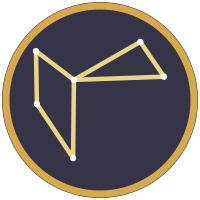
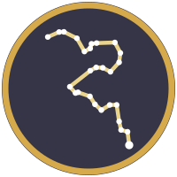
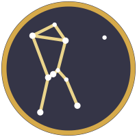

The Quest Map
Where the COSMIC Framework stands on the road every theory travels, from an idea to acceptance, rejection or modification. The map is updated with every episode.
The Quest is not an argument against science. It is an attempt to close the distance between what the public thinks science is and how it actually works for them, because everyone does better when more people take part than when a few do.
Last updated 22 September 2026
The map
The Route of a Result
One idea, three starting positions, one shared road. This is the lifecycle of a physics result from first thought to publication or abandonment, drawn as a trail: the footprints show the direction of travel. Select any box to read what that stage really involves, with the costs, the success rates, and links to the sources.
Idea generation
Affiliated: where the idea comes from
The question arrives already shaped by the group you sit in, the grant you are paid from, and what a supervisor can defend at a committee. That is not a criticism. It is why the work is fundable on day one and why it connects to what the field is already arguing about.
The trade. You inherit a running start and you inherit the direction with it.
Grant funding
Affiliated: public money, and what reaches the work
Applied for on a fixed cycle, judged by panel, and awarded to the institution rather than to you.
- NSF: about 27 percent of competitive proposals funded in 2024; roughly a quarter for research grants alone.
- NIH: 13.0 percent of R01 applications funded in 2025.
- Time: most of a year from submission to money, and most proposals are rewritten and resubmitted at least once.
The part rarely mentioned. A large share never reaches the research. Negotiated overhead rates have commonly run 50 to 65 percent; across NIH-funded institutions the negotiated average was about 58 percent with roughly 42 percent effectively paid. In May 2025 the NSF capped its rate at 15 percent for universities, which tells you how much was riding on that number.
Sources: NSF funding rates · NIH success rates · NSF 15% indirect cost policy
Pre-registration (optional)
Affiliated: pre-registration is optional, and usually skipped
Physics rarely pre-registers. The practice grew in medicine and psychology, where it was introduced to stop the analysis being chosen after the result is known, and it is spreading into data-heavy physics.
Why it matters here. Without it, a claim's date is the date it was published, not the date it was thought of. Every argument about priority on this site turns on that distinction.
Experiment and verification
Affiliated: instrument time is the real currency
Money is not the scarcest resource. Time on the instrument is, and it is allocated by committee to teams with institutions behind them.
The competition. For JWST Cycle 5, 2,639 proposals asked for 101,751 hours against roughly 8,000 available: about thirteen requests for every hour on offer.
Source: STScI, JWST programs
Idea generation
Industry: the question is product-shaped
The subject is chosen where the physics and the roadmap overlap. Google Quantum AI works on error correction because a useful quantum computer cannot exist without it, and genuine physics gets done on the way to a product.
The trade. Enormous resources, aimed only where they pay.
Corporate R&D budget
Industry: no grant cycle at all
The decision is internal and can be made in a week. There is no panel, no resubmission, no overhead argument, and no public record of what was declined.
What it buys. Speed, and hardware nobody else has.
What it costs. The funder chooses the question, and the record shows that matters: across 75 studies, industry-funded drug and device research was about twice as likely to report favorable results and about two and a half times as likely to reach favorable conclusions.
IP and patent clearance
Industry: protect first, publish second
In most countries a public disclosure before filing can destroy the right to a patent, so the paper waits for the lawyers. Applications publish about eighteen months after filing, which is why competitors' filings are readable long before their products ship.
The hard edge. In the United States a patent application can be placed under a secrecy order, and the work disappears from public science entirely.
Experiment and verification
Industry: the instrument belongs to the company
No allocation committee and no queue. Also no obligation to release the raw data, which is the reason some industry results cannot be independently replicated even in principle.
Worked example. The Willow quantum error-correction result was published in Nature in December 2024, on hardware only Google has.
Source: Willow, Nature 2024
Idea generation
Independent: the one genuine advantage
Nobody has to approve the question. No roadmap constrains it, no committee scores it, no supervisor has to be persuaded first. This is real and it is the reason independent work exists at all.
Road stage 1: the idea. A question, and a first answer to it.
Self-funding
Independent: the hardest wall on the chart
Almost every research grant requires an institution to receive the money. With no institution, the usual answer is your own pocket.
Note what kind of wall this is. It is administrative, not intellectual. Nobody has judged the work; the form simply has no box for you.
Road stage 2: written down. The framework is published in full so anyone can read and question it, which costs nothing but time.
Falsifiability and public deposit
Independent: the compensating move
With no institution to vouch for you, a dated public deposit is the only thing separating a prediction from a story told afterward. Zenodo, run by CERN, issues a permanent DOI and a date that cannot be edited later.
What has to be in it. A number, an uncertainty, a named instrument that could contradict it, and the outcome you will accept either way.
Road stage 3: pre-registered. Three missions are registered and waiting.
Test against public data
Independent: use the instruments without owning them
No instrument time, so the strategy is to predict something a major survey is going to measure anyway, and then accept the answer.
This only works because the large collaborations publish. DESI, Rubin and the Simons Observatory all release data to anyone, which is the single policy that makes independent cosmology possible.
Road stage 4: tested. First deciding data expected 2027.
Internal check
Every lane meets here
Before anything goes out, someone checks it: a co-author, a review board, or in the independent case only you and whoever you can persuade to read it.
This is where the lanes stop being equal. Industry has a formal technical review. A university group has co-authors and a seminar. An independent researcher has no one by default, which is exactly the gap an adversarial pre-check is meant to fill: do the units balance, does the derivation close, has this already been refuted, could the prediction fail.
Preprint server
arXiv, and the endorsement wall
Launched on 14 August 1991 by Paul Ginsparg, free to read and to post, past two million papers by the end of 2021. Physics runs on it: most papers appear here before, or instead of, a journal, and posting establishes priority immediately.
Who may post. A new author must be endorsed by an established author in that subject area. About 300 volunteer moderators screen submissions; roughly 6 percent are held and about 2 percent rejected.
Changed January 2026. arXiv no longer accepts an institutional email address as the qualifier for endorsement, after a rise in non-scientific submissions. Affiliation alone will not open this door any more; only a person who reads the work will.
Unmoderated alternatives exist and carry no standing with anyone you are trying to convince.
Journal submission
Submission, and what the journal is actually for
Not distribution: the internet solved that in 1991. A journal supplies the version of record, a documented review, and the currency that hiring committees, promotion panels and funders count.
Who reads it first. An editor, who desk-rejects most of what arrives before any reviewer sees it. A 2017 study of 713 editors at 52 influential US medical journals found 51 percent had received general payments from industry in 2014.
Source: Liu et al., BMJ 359 (2017) j4619
Peer review
Two or three people decide
Peer review is two or three unpaid specialists, chosen by an editor, usually from the same small field as the author, sometimes competitors for the same grants. It has no investigators, no subpoena power and no budget. It runs on the assumption that a reviewer's interests are disclosed.
Who those people are. A 2024 study of 1,962 physician peer reviewers at the BMJ, NEJM, JAMA and the Lancet found more than half had received industry payments between 2020 and 2022, totalling 1.06 billion dollars.
What it does not catch. Both of physics's famous fabrication cases passed peer review repeatedly at the most selective journals. What caught them was replication failure and independent researchers reading the figures.
Source: JAMA (2024), payments to peer reviewers · related reading
Rejection letter
Rejection is the normal case
Most submissions to a selective journal are rejected, and a large share never reach a reviewer at all. An address that reads Independent starts further back: the 1982 Peters and Ceci experiment resubmitted already-published papers under unknown names and affiliations, and most were rejected.
Measured version. In a randomized trial at a 2017 conference, reviewers who could see author identities were significantly more likely to recommend acceptance for famous authors (odds multiplier 1.63), top universities (1.58) and top companies (2.10), on the same papers.
Source: Tomkins, Zhang and Heavlin, PNAS 114(48) (2017) 12708
Revise and resubmit
The loop, which is where most papers live
Papers are rarely abandoned on rejection. They go back to the preprint for community comment, get rewritten, and are submitted to a different journal, often one tier down. Two or three rounds is ordinary and a year can pass.
Why the loop matters to us. Every pass through it is time in which the dated public record is the only thing establishing when the claim was made.
Abandon or archive
Some work stops here
A result that cannot find a venue is not necessarily wrong, and it is not necessarily right either. It stops being part of the conversation, which in practice is the same as not existing.
Where a public deposit exists, the record survives even when the paper does not.
Sigma criterion
How strong is strong enough
Particle physics sets its bar explicitly, which most fields do not.
- 3 sigma is called evidence: roughly a 1 in 740 chance of arising from noise.
- 5 sigma is called discovery: roughly 1 in 3.5 million. The Higgs boson was announced in July 2012 at 5 sigma.
Where our own tests sit. DESI's evolving dark energy runs about 2.8 to 4.2 sigma depending on which supernova compilation is combined. That is evidence, and it is not discovery, and saying so plainly is the whole discipline.
Publication and open access
Accepted, and then the bill
Acceptance is not the end. Open access is paid by the author: about 12,850 US dollars at Nature, 7,350 at Nature Communications, 2,850 at Scientific Reports, and commonly 2,000 to 6,000 elsewhere.
Who feels it. A university pays from a grant or a library deal, so the author never sees the invoice. A company pays without noticing. An independent researcher pays personally, or asks for a waiver. Identical obstacle, three different meanings.
And then it is paid for twice. Libraries subscribe as well. RELX, Elsevier's parent, reported about 1.17 billion pounds of adjusted operating profit on 3.05 billion of revenue in its scientific division, a margin near 38 percent. Authors and peer reviewers are paid nothing.
Addendum or further testing
Not strong enough yet
A result below the bar is not a failure. It is routed back: more data, a tighter analysis, or a narrower claim. Most results in physics live here for years.
The honest risk. This is also where a result can be quietly reshaped until it agrees with the data. The protection is the same one this institute relies on everywhere: the prediction was registered, with a date, before the data existed.
The five paths
Where an Idea Can Go
An idea does not become knowledge by being right. It becomes knowledge by passing through one of these paths, each with its own gatekeepers, costs and timescales. Open any path to see what it actually asks of you. The Quest reports where the COSMIC Framework stands on each.
Not every path is on the same quest
Before reading the paths, ask what each one is actually trying to maximize. Only some of them are trying to find out what is true.
| Path | What it is really optimizing for | What that does to the evidence |
|---|---|---|
| Institutional | Truth, reached through careers: publications, grants, positions | Mostly self-correcting, but slow, and it favors work that fits an existing program |
| Business | Profit | Research serves a product. Findings that help are published and findings that hurt need not be |
| Military | Advantage and security | The work can be excellent and still never be checked in public, because it is classified |
| Independent | Usually truth, because there is no other payoff | No filter either: most of what travels this path is wrong, and nothing separates it from the rest except a public, dated record |
| International | Shared capability, and national standing | Enormous instruments, decided years ahead, with data released to everyone |
The clearest case is the tobacco industry. It funded scientists, published papers and convened committees, and its goal was never to find out whether smoking caused cancer. Its own documents, released in litigation, describe the aim: manufacture doubt. That is a search for profit wearing the clothes of a search for truth, and it is why the question "what is this path paid to conclude?" comes before any argument about the data.
InstitutionalUniversities, public research, journalsOpen
The steps. Get an affiliation, usually a doctorate and a position. Win funding: in the United States in 2025, NIH funded 13.0% of R01 applications and the National Science Foundation about a quarter of its proposals. Get time on an instrument: for JWST Cycle 5, 2,639 proposals asked for 101,751 hours against 8,000 available, about 13 requests for every hour. Do the work, write it up, and send it to a journal, where two or three unpaid reviewers, usually from the same small field, advise an editor. Revise. Publish. Then wait for someone to replicate it.
The gates. Affiliation, funding, instrument time, reviewers, and a field's willingness to spend attention on you.
The clock. Five to fifteen years from idea to accepted result is normal. Wegener proposed continental drift in 1912; geology accepted it in the 1960s.
The people in it. This path runs on graduate students and postdocs. Our blog post What Most People Think Science Is goes through what that costs them: the anxiety and depression rates, the stipends, and how few ever reach a permanent position. They are players in the Quest as much as any instrument.
Where we are. Framework papers and the pre-registrations are public on Zenodo. No journal submission yet.
BusinessIndustry partners, private funding, patentsOpen
The steps. Protect first, publish second: in most countries a public disclosure before filing can end your right to a patent. Sign non-disclosure agreements. Find an investor who accepts a return in three to seven years, which is faster than most physics pays out. Agree who owns the result and who may publish it.
The gates. Money, intellectual property, and a market. A funder decides which questions get asked.
The catch. Industry-funded work is more likely to reach conclusions the funder prefers. A Cochrane review of 75 studies covering 4,583 trials found industry-sponsored drug and device research significantly more likely to report favorable results and favorable conclusions. Not fraud, usually: the influence sits in which question is asked, how the study is designed, and what gets reported.
Where we are. Nothing to report yet.
MilitaryDefense programs and classified workOpen
The steps. Answer a defense solicitation, such as a DARPA broad agency announcement. Clear the security requirements. Accept that results may be classified, and that export-control rules can limit who you may even talk to. In the United States, a patent application can be placed under a secrecy order.
The gates. Clearance, classification, and a mission case.
The catch. This path can fund work nothing else will fund, and it can also make the work disappear. Classified results cannot be tested in public, which is the opposite of what this institute is for.
Where we are. Not pursued.
IndependentIndependent work, public data, open recordsOpen
The steps. Write the idea down in public with a date. Deposit it where the record cannot be edited later. Use public data, because you will not be allocated an instrument. Derive something specific enough to fail. Then ask people who can check it to check it.
The gates, honestly. Most grants require an institution. Instrument time requires a proposal team. arXiv asks new authors for an endorsement from an established author before they may post in a field. Journals desk-reject most of what arrives, and an author whose affiliation reads Independent starts further back. Conferences cost money and usually want a host.
Why the door is heavy. Most independent claims are wrong, so the filters are mostly doing their job. That is the uncomfortable part: the same filter that stops nonsense also stops a good idea with no credentials behind it. Faraday, Einstein in the patent office, Ramanujan writing to Hardy and Wegener all got through anyway, and each of them still had to convince the field on its terms.
What actually works. Say what would prove you wrong, before the data arrives. Show the derivation so someone can check it in an afternoon. Publish every outcome, including the ones against you. That is the whole strategy here, and it is the only one available without a badge.
Where we are. This is our path: an independent institute testing against public data, with predictions registered in advance.
InternationalWorldwide collaborations and shared instrumentsOpen
The steps. Large instruments belong to consortia of nations: CERN, the European Space Agency, ITER, the big survey collaborations. Work enters through a member institution, passes internal review, and is released on the collaboration's schedule. Author lists run to hundreds or thousands of names.
The gates. Membership, national funding cycles, and a collaboration's own priorities. Decisions are made years ahead: the instruments that will test our predictions were designed and funded long before the predictions existed.
The opening. These collaborations publish their data. Anyone can test a prediction against it, which is how an independent researcher can use the largest instruments ever built without being a member of the club.
Where we are. Our tests rely on public releases from DESI, the Simons Observatory and Rubin.
Who reviews whom
Peer review is done by two or three unpaid specialists, chosen by an editor, usually from the same small field as the author. They may be competitors for the same grants. They declare conflicts of interest, and journals rely on that declaration.
Where an industry funds the research, the record is documented: the Cochrane review cited above found industry-sponsored studies more likely to report favorable results. The tobacco industry's own documents, released through litigation, show the strategy stated plainly in a 1969 internal memo: doubt is the product, because doubt is what competes with the body of fact in the public mind. This is not an argument against peer review. It is the reason a public, dated record matters more than any assurance, including ours.
What we are waiting for
The Next Answers
Every one of these answers arrives from a machine somebody else built. Meet the instruments. Each test is a mission, named for good and never reused. These are the data releases that will decide the three active missions.

Midnight Phoenix COSMIC-008
A polarization signature in the cosmic microwave background, at an angular scale derived from the framework.

Midnight Eridanus COSMIC-005
Whether the change in dark energy that DESI reported persists in its five-year data.

Midnight Orion COSMIC-007
A preferred direction in galaxy distributions beyond 100 Mpc, toward (l, b) ≈ (210°, −20°).
Dates are the observatories' own estimates and move when theirs do. Full details are on the testing schedule.
If the idea is yours
Where Else to Look
This map exists because we could not find one. We looked again on 24 September 2026 and still found nothing that puts the paths, the gates and the costs in one place; what continuity there is tends to be written for a classroom. These three are worth your time, and each does one part of it properly. Here is where each one stops.
Peer Review: The Nuts and Bolts
Sense about Science · free PDF
Written by early career researchers for early career researchers, to open up the one gate everybody has heard of and almost nobody has seen working. If you read one thing before sending a paper anywhere, read this.
Where it stops. One gate, covered well. It does not tell you how to reach it without an affiliation, or what it costs once you are through.
OpenAPC
Bielefeld University Library · open data
What institutions actually paid, article by article, rather than what publishers advertise. Universities and funders submit their real invoices; the whole set is downloadable under an open database licence, with a treemap for reading it without a spreadsheet.
Where it stops. Open-access charges and transformative agreements only. Submission fees, page charges and colour charges are not in it, and neither is anything an unaffiliated author would pay personally.
NCIS and the Ronin Institute
Membership bodies for unaffiliated scholars
Not guides but doors. Both exist to give an independent researcher the affiliation that forms keep asking for. NCIS is vetted, runs six grants and prizes, publishes its own open-access peer-reviewed journal, and its membership is accepted as an affiliation by publishers. The Ronin Institute is a US nonprofit doing the same job.
Where it stops. They solve the affiliation box. They do not tell you which path to take or what waits on it.
If you know of something that does cover the whole route, we would rather link it than duplicate it. Tell us and it goes on this page. Corrections to anything above are welcome on the same terms.